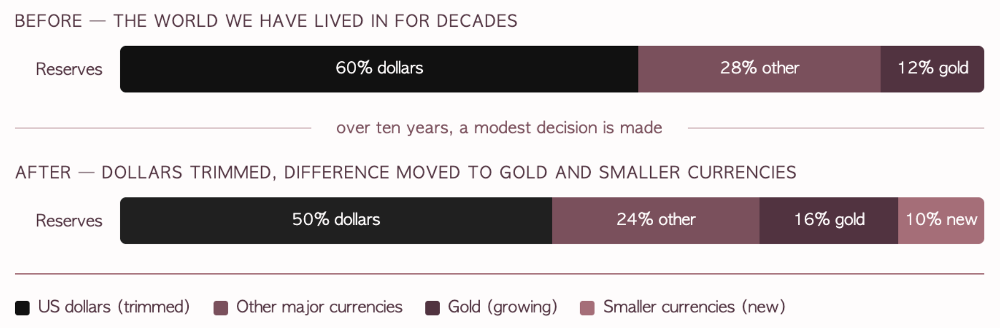

This issue's syllabus · Issue No. 09 · July 1, 2026
Foreign Exchange.
This week's story sits at the very heart of foreign exchange, the global marketplace where currencies are bought, sold, and held against one another.
This week's story sits at the very heart of foreign exchange, the global marketplace where currencies are bought, sold, and held against one another. The single most powerful idea in all of foreign exchange is the one this week revolves around: the reserve currency.
Let us start with what a reserve currency actually is. When countries trade with one another, they need a shared currency they all trust to settle the bill. This is basically the financial version of a big group at dinner agreeing to split the cheque in one currency so nobody has to juggle the maths in five. For roughly eighty years, that shared currency has overwhelmingly been the US dollar. Oil is priced in it. Global debts are issued in it. Central banks hold mountains of it. That is what people mean when they call the dollar the world's reserve currency. It is the default setting. The thing everything else is measured against.
Being that default is worth a fortune, and as we covered in the Foundation, that is the dollar's exorbitant privilege. Because of the large demand for dollars, the US borrows more cheaply and spends more freely than anyone else. The catch, and it is the entire catch, is that this privilege is not permanent by law. It is a choice the rest of the world keeps making, year after year, and it lasts exactly as long as the world keeps making it.
Now let us make this concrete, because a reserve shift is one of those things that sounds abstract until you put numbers on it.
Imagine a single central bank holds 100 in reserves, and 60 of that sits in dollars. That is the world we have lived in for decades, the dollar as the heavyweight in almost everyone's savings pile. Now imagine that bank decides, over the next ten years, to bring its dollars down from 60 to 50, moving the difference into gold and a scatter of smaller currencies. On its own, that is a modest, almost boring change. Ten units, moving slowly, barely a headline.

But here is where it stops being boring. This survey covers institutions holding around ten trillion dollars between them. When even a small portion of that makes the smallest move in the same direction, the flows are staggering, and they all pull the same way at once. A small, sensible decision, multiplied across the whole official financial world, becomes one of the most powerful currents in global markets. That is the thing to understand about reserves.
The individual moves are gentle. The collective move is an ocean.
Most importantly all of this happens in slow motion. No central bank gets rid of its dollars overnight, because that would crash the very asset it is trying to sell. So a reserve shift never looks like a dramatic exit. It looks exactly like what we are seeing this week, a change of intention, a net 30% leaning toward gold, and a survey arrow pointing a new way. By the time a shift like this is normal to everyone, it has been happening for years. Which is the whole reason noticing it now, while it is still just a flicker, is the actual skill worth building.
As we covered in the opening section, the same instinct runs through everything else in this survey. Central banks reaching for AI, public funds shifting into infrastructure and real estate, money tilting toward emerging markets. These are not separate stories. They are all saying the same thing essentially, just in different words: spreading trust, building new tools, and refusing to wait for a calm that may not come.
The dollar's dominance has always been a choice the world makes, never a fact the world is stuck with. This week, for the first time, the people who make that choice began, very gently, to spread it around, into gold, into smaller currencies, into emerging markets, into new tools for a world they have decided will stay turbulent. The dollar is still at the center of the global financial system. But for the first time in a long while, that position is being treated as something that has to be earned, rather than simply assumed.